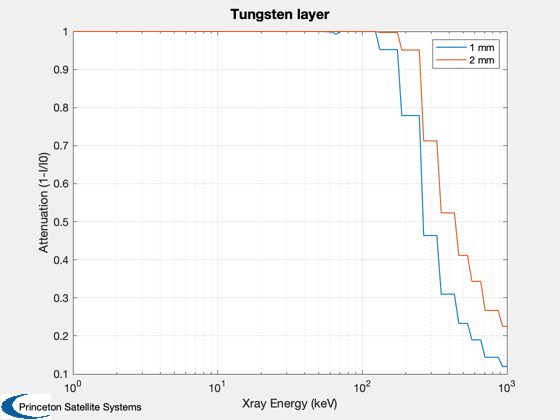
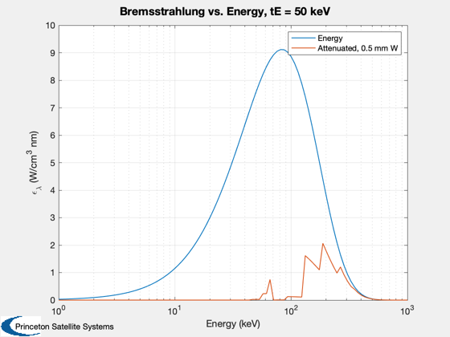
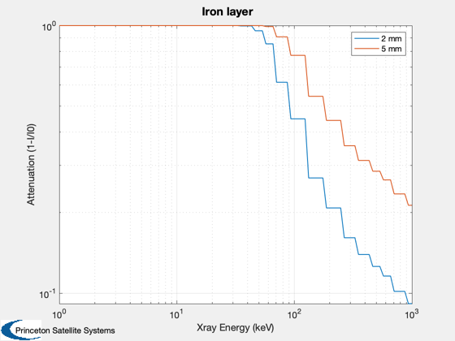

Contents
Shielding mass simple calculations
Calculate simple cylinders of potential shielding materials.
%-------------------------------------------------------------------------- % See Also: XRayMassCoeff, BremsstrahlungWavelength %-------------------------------------------------------------------------- %-------------------------------------------------------------------------- % Copyright (c) 2016 Princeton Satellite Systems, Inc. % All rights reserved. %--------------------------------------------------------------------------
Boron carbide - neutron shielding
rhoBC = 2520; % kg/m3 lShield = 1; % shielding length, m ID = 0.32; % nominal inner diameter ID2 = 0.2; % stepped section inner diameter % Simple cylinder tShield1 = 0.1; m10 = pi*((ID+tShield1)^2 - ID^2)*lShield*rhoBC tShield2 = 0.2; m20 = pi*((ID+tShield2)^2 - ID^2)*lShield*rhoBC % Stepped cylinder m10step = rhoBC*pi*lShield*(... 0.5*((ID+tShield1)^2 - ID^2) + ... 0.5*((ID2+tShield1)^2 - ID2^2)) m20step = rhoBC*pi*lShield*(... 0.5*((ID+tShield2)^2 - ID^2) + ... 0.5*((ID2+tShield2)^2 - ID2^2))
m10 =
585.84
m20 =
1330
m10step =
490.84
m20step =
1140
Lithium Hydride - neutron shielding
rhoLiH = 780; m10 = pi*((ID+tShield1)^2 - ID^2)*lShield*rhoLiH m20 = pi*((ID+tShield2)^2 - ID^2)*lShield*rhoLiH m10step = rhoLiH*pi*lShield*(... 0.5*((ID+tShield1)^2 - ID^2) + ... 0.5*((ID2+tShield1)^2 - ID2^2)) m20step = rhoLiH*pi*lShield*(... 0.5*((ID+tShield2)^2 - ID^2) + ... 0.5*((ID2+tShield2)^2 - ID2^2))
m10 =
181.33
m20 =
411.67
m10step =
151.93
m20step =
352.86
TUNGSTEN - Xray shielding
rhoW = 19250; % kg/m3 tWh = 0.0005; tW1 = 0.001; tW5 = 0.002; % 0.5 mm shielding Tungsten m0h = pi*((ID+tWh)^2 - ID^2)*lShield*rhoW % 1 mm shielding Tungsten m01 = pi*((ID+tW1)^2 - ID^2)*lShield*rhoW % 2 mm shielding Tungsten m05 = pi*((ID+tW5)^2 - ID^2)*lShield*rhoW m01step = rhoW*pi*lShield*(... 0.5*((ID+tW1)^2 - ID^2) + ... 0.5*((ID2+tW1)^2 - ID2^2)) m05step = rhoW*pi*lShield*(... 0.5*((ID+tW5)^2 - ID^2) + ... 0.5*((ID2+tW5)^2 - ID2^2))
m0h =
19.367
m01 =
38.765
m05 =
77.651
m01step =
31.508
m05step =
63.137
Xray attenuation
I = I0 exp[ -kx ], x = rho*t
energy = logspace(-3,0,100); % 10 keV to 1 MeV lambda = 1.24./(energy*1e6)*1e3; % nm [massAtten, ~] = XRayMassCoeff( 'tungsten', energy); f5 = exp(-massAtten*rhoW*0.0005); % 0.5 mm f1 = exp(-massAtten*rhoW*0.001); f2 = exp(-massAtten*rhoW*0.002); Plot2D(energy*1e3,1-[f1;f2],'Xray Energy (keV)','Attenuation (1-I/I0)',... 'Tungsten layer','xlog') legend('1 mm','2 mm') nI = [1e14 1e14]; zI = [1 2]; tE = 50000; % 30 keV eBr = BremsstrahlungWavelength( lambda, tE, nI, zI ); titleStr = sprintf('Bremsstrahlung vs. Energy, tE = %g keV',tE*1e-3); Plot2D(energy*1e3,[eBr;eBr.*f5],'Energy (keV)','\epsilon_\lambda (W/cm^3 nm)',... titleStr,'xlog') legend('Energy','Attenuated, 0.5 mm W') rhoSS = 8000; [massAtten, massAbsorb] = XRayMassCoeff( 'iron', energy); f2 = exp(-massAtten*rhoSS*0.002); f5 = exp(-massAtten*rhoSS*0.005); Plot2D(energy*1e3,1-[f2;f5],'Xray Energy (keV)','Attenuation (1-I/I0)','Iron layer','log') legend('2 mm','5 mm') %axis([10 1000 0.01 1])  
neutron attenuation?
%--------------------------------------